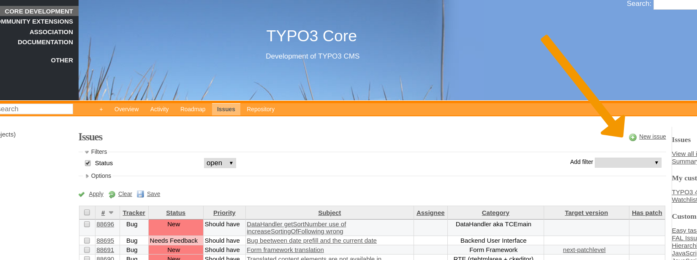

Report an Issue¶
Introduction to Forge¶
The issue tracker Forge is currently based on Redmine. It is used to report and handle open issues (including bugs and feature requests). First, get yourself an account, see Setting up Your Accounts.
When you want to report a bug or suggest a new feature, go to the “Issues” section for the TYPO3 Core.
Searching for Existing Issues¶
Before you go ahead and report a bug, it is recommended that you check Forger to see if the same issue or something similar has already been reported.
Forger’s search functionality makes it easy to find existing issues. Filters are located on the the left hand side of the navigation menu. You can use this feature to help refine searches.
Identify the Issue¶
Before you report a bug or suggest a new feature, make sure that the issue you report will be helpful by following these guidelines:
- Remove side effects
- Work on a TYPO3 instance which is as clean as possible so you can rule out extensions messing with the TYPO3 core. If you need to set up an extension to illustrate the problem, make sure it is as free of side effects as possible.
- Narrow down the problem
- Try different browsers, this will help the team (and you) a lot to provide a proper description of the problem.
- Be up to date
First of all you should make sure that the bug does exist on the latest TYPO3 version; we always recommend you to upgrade your TYPO3 environment to the latest release of the LTS version you use. See https://get.typo3.org/ to get the latest version of your LTS.
Or even better: use the latest version from git.
- Talk to the core team
- When in doubt, don’t hesitate to talk to us on Slack in the #typo3-cms-coredev channel. (Remember to register first.)
Create an issue¶
Get your typo3.org account, head over to Forge and log in (if you aren’t already). You can find the TYPO3 core issue tracker here: https://forge.typo3.org/projects/typo3cms-core/issues.
Tip
If you do not see the “New issue” link:
- make sure that you are logged in
- click on “CORE DEVELOPMENT” in the top left. Alternatively, you can click on the “Issues” link (in the orange bar at the top)
If you click “New issue” you will see a form with a couple of fields that are important. Let’s go over these really quick.
Tracker¶
The tracker is just Redmines term for the type of issue. The trackers you will be using the most are Feature and Bug.
The others are mostly for internal organization (like Stories and Epics) and things which aren’t really a feature or a bug… they are just Tasks somebody needs to take care of.
Subject¶
Pick a meaningful subject. Something like “Error in list module” is very generic and doesn’t help describing the problem. Just imagine how you would like to get a report for yourself :)
Tip
Remember, the subject is also helpful for people searching for already existing issues. Be as clear and precise as possible!
- Bad example:
- Bug
- Good example:
- JS error in Internet Explorer when inserting record in list module.
Description¶
For bugs, provide steps how to reproduce the problem. See Best practices for writing a good bug report for some extra hints on what should go in the description.
Be sure to add images, code snippets and or stacktraces if they help to refine the problem description. See (optional) Files for hints on adding files.
Always keep in mind these points when writing your issue report:
- Be detailed in describing your problem
- The more detail you add, the higher are the chances that we understand your problem.
- Be concise and clear
- No one will judge you for your literary skills. We need to understand quickly where the problem lies.
- Format your issue
- Formatting your report helps readability. For longer text, use headers (h1, h2) to structure it. Use highlighted code (<>) for code snippets. Don’t use very long sentences, instead use bullet points. See the section Hints for formatting in Redmine for more information on formatting your text.
- Be polite.
- Always.
Category¶
Choose a category that fits your issue.
PHP Version¶
(for bugs only)
Choose the PHP version, where the error occurs. If in doubt, leave this blank. Usually, it is enough to supply the TYPO3 version.
(optional) Files¶
You can additionally uploads files if they help to understand and reproduce the problem.
Some hints for files:
- Do not copy-paste huge stack dumps into the description. Cut out the relevant parts for the description and add the complete stack dump as extra file.
- Images can be a huge help in understanding the problem. Do not insert complete screen dumps but clip the image to the relevant parts. If it helps, add boxes or arrows to highlight important things in the image. Use Redmine formatting for inline images
- If a video is even better in understanding a bug, try to create a short (!) video that clarifies your issue. For example, use an animated gif screen capture tool to create an animated gif.
Tip
Use the “Preview” function at the bottom of the page to check if your issue is formatted well.
Best practices for writing a good bug report¶
It is not necessary to add all available information to your bug report. It is important to provide the specific information that is necessary to be able to understand, reproduce and fix the bug.
Use your common sense and your experience to guide you: What would you need if you wanted to find the bug in the code and fix it? What do you need if you want to reproduce it to debug it or test if the patch solves the problem?
A good bug report should contain all or any of these elements:
Prerequisites:
Here you can add:
- A brief description of your environment. Depending on the nature of the bug it might inclde your operating system (Windows, Linux, macOS, …), the full version of TYPO3, the webserver used, the database used (mySql, SQLServer, …) and its version. In any case, the full version of TYPO3 (e.g. 9.5.1) is very helpful. If your bug is reproducible on several versions (e.g. 10.1.0 and 9.5.1), that is helpful as well.
- A description of the TYPO3 setup that you are using or that is necessary to trigger the bug. Your issue came out using TYPO3 with multiple languages? Or when you have more than two frontend groups? You have to tell us, otherwise we could not be capable of reproducing your issue.
We don’t need a full description of your environment, or the full TypoScript configuration, but just the parts that are relevant to trigger the bug.
Steps to reproduce the problem
This is a short easy-to-follow guide that allows us to understand how to trigger the bug following it. Using a numerated list of steps is just fine here; you can also add screenshots.
Actual results
This is the heart of your problem: what happened after you followed the steps? Please add also here if your problem is repeteable or comes out randomly.
Expected results
What you expected to happen instead.
Additional notes
Additional information like special conditions or other details not reported on the previous points.
Please consider that these guidelines are very generic. Not always all these parts are necessary, but having the necessary information could help a lot to reproduce and fix the bug.
Tip
Use redmine formatting to structure your bug report and make it more readable, for example use headlines (h1, h2) to structure the parts, hightlighted code (<>) for code snippets, code for inline images (!image!).
Hints for formatting in Redmine¶
Redmine offers quite a few text formatting options: use them to make your report readable. Remember, good formatting makes reading the bug report easier and increases the probability that people will be able to reproduce the problem and help with fixing, testing and merging patches. During the life cycle of a bug report and patch, several people will be reading your report. High readability and clarity makes things easier for everyone and saves time.
Images¶
If you attach images (which makes sense, because a screenshot says more than 1000 words), consider displaying it inline in your description using exclamation marks to wrap your filename in - this saves everybody a click and makes it easier to understand which image goes where. Do not use fullscreen screenshots, provide a screenshot of the relevant parts of the problem.
Example:
!filename.png!
Tip
When more images are added on with comments on your original issue, all images are displayed in a list. This makes it very difficult to determine, which file belongs to the original issue description. This is another reason to consider using inline images.
See:
Code formatting¶
Do not add screenshots of code, use the <pre><code> tags in
Redmine so we can search for the lines of code via Forger.
External Links¶
Format your links correctly for better readability. You can insert the URL directly, but if the URL is long, it is better to provide a descriptive anchor text.
Syntax:
"Anchor text":url
Example:
"Forger search example":https://forger.typo3.com/search?query=really+long+query+string+with+filters&filters%5Btypo3_version%5D%5B8%5D=true&filters%5Bcategory%5D%5BLink_Handling_%26_Routing%5D=true
See: